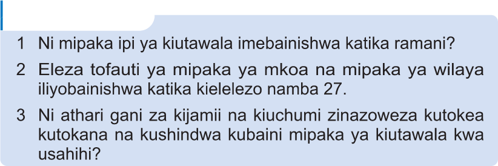

Maswali
1 Ni mipaka ipi ya kiutawala imebainishwa katika ramani?
2 Eleza tofauti ya mipaka ya mkoa na mipaka ya wilaya iliyobainishwa katika kielelezo namba 27.
3 Ni athari gani za kijamii na kiuchumi zinaweza kutokea kutokana na kushindwa kubaini mipaka ya kiutawala kwa usahihi?
